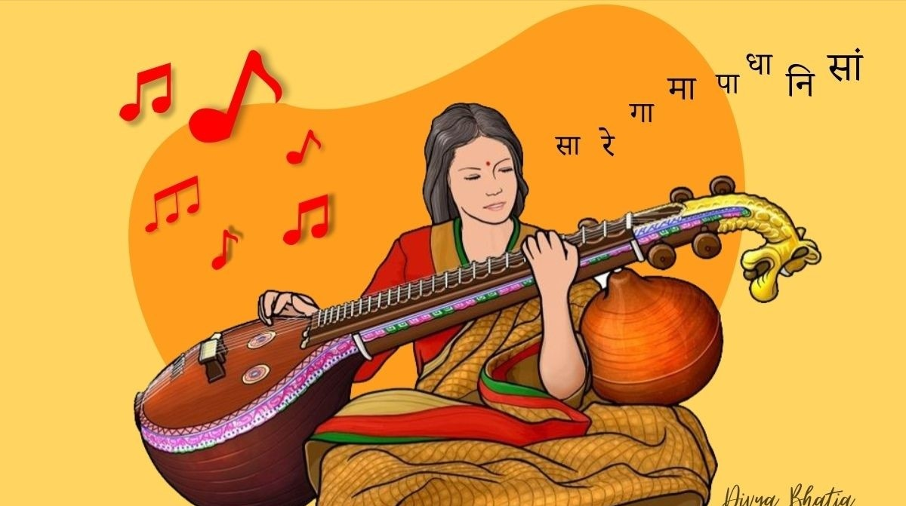

RAAG BHUPALI
Raag Bhupali soft melody raag with the dominant Gandhar. Bhoop means King. Bhoopali is a majestic raag from the kalyan family.This raag is one of the beginner raags taught to students due to its simplicity.
RAAG BAGESHRI
Raag Bageshri has a huge depth of expression allowing a never ending sea of exploration. A late night raag of the second prahar 9pm-12am, which is meant to depict the emotion of a woman waiting for reunion with her lover.

RAAG KAFI
Kafi raag is a melodic pathway so sweet, emotional and sophisticated, it is virtually an inexhaustible source of mental and spiritual nourishment. Kafi is a sampoorna raga, with komal Gandhar and Nishad.This is also referred to as the Bhairavi of night.

RAAG DURGA
Raag Durga is a Hindustani raaga associated with the Hindu goddess Durga. It has qualities of brightness, innocence and purity.The time traditionally prescribed for this Raga is late evening to midnight. Raga Durga can help to release stress.

RAAG BHIMPALASI
Raag Bhimpalasi belongs to the Kafi Thaat. It is a Poorvang Pradhan Raag, which means it is a primary raga of the Poorvang tradition. It is a very sweet and hauntingly pleasant melody that is often performed during the early afternoon.

RAAG KHAMAJ
Raag Khamaj is a popular raga that is known for its light and enthralling nature. It is a Shadava-Sampurna raga and is sung in the 2nd division of the night from 9 pm – Midnight. Many Ghazals and Thumris are based out of Raag Khamaj.

RAAG DESH
Desh raag is a popular Hindustani classical music raga that belongs to the Khamaj thaat. It is an Audava-Sampurna raga and is known for its sweet and melodic nature, making it a favorite among musicians and music enthusiasts.

RAAG KALYAN
Raag Yaman is a Janak Raag from the Kalyan family of raags. Some texts use Raag Yaman and Raag Kalyan interchangeably. There is also a version which uses both shuddh and teevra Ma. It is called Yaman-Kalyan or Jaimini-Kalyan.